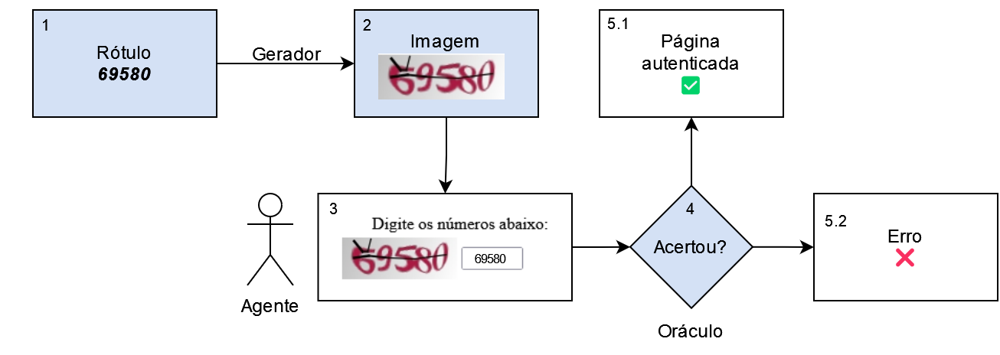
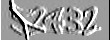
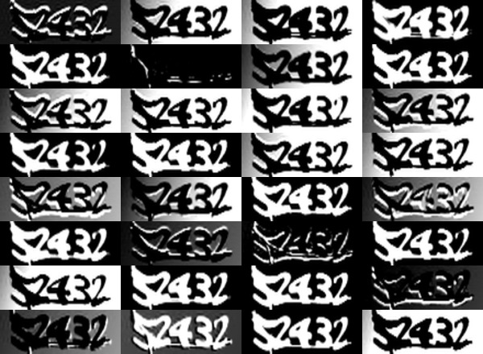

2 Metodologia
If machine learning can decipher captchas, what’s next? Toilets that can read our minds?
– ChatGPT
O capítulo está organizado em três seções: definição do problema, dados e simulações. A primeira mostra a base matemática do problema estudado e as escolhas de sintaxe e terminologias. A segunda descreve as fontes de dados e o processo de coleta, já que a base foi construída totalmente do zero. A terceira mostra como foram planejadas as simulações para verificar se a solução proposta funciona bem empiricamente.
Na parte de redes neurais, optou-se por trabalhar nas pontes entre os modelos clássicos de estatística e os modelos de redes neurais, mas sem tecer todos os detalhes técnicos que podem ser encontrados em livros didáticos. Antes de 2015, a pesquisa em redes neurais nos departamentos de estatística era uma novidade, sofrendo até certo preconceito por ser uma classe de modelos “caixa preta”. Com o passar do tempo, no entanto, a área está ficando cada vez mais popular, envolvendo até mesmo trabalhos de iniciação científica no tema. Por isso, optou-se por trazer poucos detalhes da área, focando nas pontes entre os modelos clássicos e as redes neurais. Espera-se que o conteúdo possa ser aproveitado por pessoas interessadas em ensinar redes neurais para estudantes de estatística.
Na seção de dados, procurou-se apresentar a metodologia de coleta em detalhes. Isso foi feito porque a área de raspagem de dados não é comum para estudantes de estatística, existindo até uma percepção entre acadêmicos de que trata-se de uma área separada da estatística. Uma das hipóteses de pesquisa, bem como a solução técnica apresentada neste trabalho é justamente uma ponte entre as duas áreas, justificando um detalhamento maior dos conceitos.
Implementações de raspagem de dados, no entanto, são inconstantes. Um site de interesse pode mudar sua estrutura ou simplesmente trocar o Captcha para um reCaptcha da noite para o dia, alterando completamente o fluxo de coleta. Isso aconteceu, inclusive, com um dos sites mais importantes dentro do contexto da jurimetria: em 2018, o Tribunal de Justiça de São Paulo (TJSP) passou a utilizar o reCaptcha para bloquear ferramentas automatizadas. Qualquer código ou fluxo para acessar as fontes de dados consideradas no trabalho, portanto, estariam datadas no momento da publicação. Por isso, optou-se por apresentar essa parte de forma genérica e deixar as atualizações para os códigos, que estão disponíveis publicamente e serão mantidos com contribuições da comunidade.
Na seção de simulações, procurou-se descrever os passos dados em detalhe. Nesse caso, a escolha do detalhamento se deu por motivos puramente científicos, para que qualquer pessoa possa reproduzir os passos dados. Dessa forma, pessoas interessadas na área podem replicar os resultados em outros exemplos com alterações mínimas no fluxo, além de sugerir melhorias.
Definição do problema
O problema a ser trabalhado é um caso de aprendizado fracamente supervisionado (ZHOU, 2018). Trata-se de uma generalização do aprendizado supervisionado e também do aprendizado semi-supervisionado. Usualmente, a área de aprendizado estatístico (ou aprendizado de máquinas) se concentra em dois tipos de problemas principais: o aprendizado supervisionado e o aprendizado não supervisionado. Isso ocorre principalmente por fins didáticos, pois é mais fácil passar os modelos que fazem parte de cada área.
No entanto, a estatística evolui com os problemas que ocorrem no mundo. E, no mundo, os problemas nem sempre recaem em uma ou outra categoria. O que temos, na verdade, é que os problemas não supervisionados e supervisionados estão conectados, desde que o objetivo de uma pesquisa seja o de predizer valores (regressão) ou categorias (classificação).
Nesse sentido, uma área que ficou popular nos últimos anos, até por conta dos avanços na área de Deep Learning, é o aprendizado semi-supervisionado (ZHU, 2005). Trata-se de uma classe de problemas contendo uma amostra completamente anotada e uma amostra sem anotações. A amostra sem anotações é usada para compreender como os dados foram gerados, e os parâmetros podem ser compartilhados com a parte supervisionada do modelo. Isso poderia indicar que existem três classes de problemas: o não supervisionado, o supervisionado e o semi-supervisionado.
Mas isso também não representa todas as classes de problemas. Em muitas aplicações reais, obter uma anotação completa e correta pode ser custoso ou até impraticável. Além disso por envolver trabalho humano, é comum que classificações contenham erros. Para lidar com esses casos existe uma área, que generaliza as anteriores, que é o aprendizado fracamente supervisionado.
Aprendizado fracamente supervisionado é um termo guarda-chuva. Dentro da área existem diversos tipos de problemas, como aprendizado semi-supervisionado, aprendizado de múltiplas instâncias (BLUM; KALAI, 1998) e o aprendizado com rótulos incorretos ou incompletos (ZHOU, 2018). O caso dos Captchas com o uso do oráculo será apresentado como outra classe de problemas, chamada aprendizado com rótulos parciais (partial label learning, PLL, (JIN; GHAHRAMANI, 2002)). Essa classe apresenta uma especialização ainda mais próxima do problema estudado, chamado aprendizado com rótulos complementares (complementary label learning, (ISHIDA et al., 2017)).
A intepretação do Captcha como um problema de PLL será apresentada no final do capítulo. A jornada começa de onde deve começar, com aqueles que são objeto de análise deste trabalho: os Captchas.
Captcha
Captcha é um desafio do tipo desafio-resposta usado para determinar se a usuário do sistema é um humano. Existem diversos tipos de Captcha diferentes, que envolvem desde identificar textos em imagens até resolver expressões matemáticas complexas.
O foco deste trabalho reside nos Captchas baseados em imagens rotuladas, que é o tipo mais comum. Em seguida, a menos que se mencione ao contrário, todos os Captchas apresentados são desse tipo.
O fluxo completo de um Captcha envolve cinco componentes: um rótulo, um gerador, uma imagem, um agente e um oráculo. Um ciclo do Captcha é completado ao seguir os passos:
- O rótulo é definido, usualmente com algum procedimento aleatório, ocultado do agente.
- A imagem é gerada a partir do rótulo e apresentada para o agente.
- O agente preenche sua resposta a partir da imagem (que pode estar certa ou errada)
- O oráculo verifica se a resposta está correta.
- Dependendo da resposta, o agente é direcionado para a página autenticada ou para uma página de erro.
A Figura 2.1 esquematiza o fluxo do Captcha.
Imagem, rótulo e variável resposta
A imagem é uma matriz \(\mathbf x = \{x_{nmr} \in [0,1]\}_{N\times M \times R}\), contendo padrões que, a partir da análise humana, levam ao rótulo do Captcha. O rótulo é dado por um vetor de caracteres \(\mathbf c = [c_1,\dots,c_L]^\top\). O comprimento \(L\) pode ser fixo ou variável, ou seja, duas imagens criadas pelo mesmo gerador podem vir com comprimentos diferentes. Nas definições que seguem considerou-se \(L\) como fixo, por simplicidade.
Captchas costumam ter dimensões relativamente pequenas, com a altura \(N\) variando entre 30 e 200 pixels e a largura \(M\) variando entre 100 e 300 pixels. As imagens costumam ser retangulares para comportar várias letras lado a lado, ou seja, geralmente \(M > N\). O valor de \(R\) é 1 para imagens em escala de cinza e 3 para imagens coloridas.
Os elementos do vetor \(\mathbf c\) fazem parte de um alfabeto \(\mathcal A\), com cardinalidade \(|\mathcal A|\), finito e conhecido. O alfabeto contém todos os possíveis caracteres que podem aparecer na imagem. Na maioria dos casos, \(\mathcal A\) corresponde a uma combinação de algarismos arábicos (0-9) e letras do alfabeto latino (a-z), podendo diferenciar ou não as letras maiúsculas e minúsculas1.
O elemento da matriz \(x_{nm\cdot}\) é denominado pixel. Um pixel representa a menor unidade possível da imagem. Em uma imagem colorida, por exemplo, \(R=3\). Nesse caso, um pixel é um vetor de três dimensões com valores entre zero e um, representando a intensidade de vermelho, verde e azul da coordenada \((n, m)\) da imagem. Em imagens em escala de cinza, \(R=1\) e o pixel, de uma dimensão, representa a intensidade do cinza, sendo 1 o equivalente da cor branca e 0 da cor preta.
A Figura 2.2 mostra um exemplo Captcha do Tribunal de Justiça de Minas Gerais (TJMG). Nesse caso, tem-se \(L=5\) e \(|\mathcal A|=10\), apenas os dez algarismos arábicos. A imagem tem dimensões \(N=110\), \(M=40\) e \(R=3\). O rótulo da imagem é \([5,2,4,3,2]^\top\).

A variável resposta é uma matriz binária \(\mathbf y_{L \times |\mathcal A|}\), em que cada linha representa um dos valores do vetor \(\mathbf c\), enquanto as colunas possuem um representante para cada elemento de \(\mathcal A\). Um elemento \(y_{ij}\) vale 1 se o elemento \(i\) do rótulo \(\mathbf c\) corresponde ao elemento \(j\) do alfabeto \(\mathcal A\), valendo zero caso contrário. A variável resposta pode ser pensada também como o one-hot encoding do rótulo.
Uma maneira alternativa de definir a variável resposta seria com um vetor de índices representando cada elemento do alfabeto em um vetor. O problema de trabalhar dessa forma é que a variável resposta \(\mathbf y\) tem um número exponencial de combinações: o rótulo possui \(L\) caracteres, sendo que cada caractere pode ter \(|\mathcal A|\) valores, totalizando \(|\mathcal A|^L\) combinações.
Por exemplo, um Captcha com \(L=6\) letras e \(|\mathcal A| = 36\) possibilidades em cada letra (26 letras do alfabeto latino e 10 algarismos arábicos), possui um total de 2.176.782.336 (\(>\) 2 bilhões) combinações. Por isso, modelar as imagens diretamente através de uma única variável resposta categórica é tecnicamente inviável.
A forma one-hot da resposta pode ser entendida como uma multinomial multivariada (LI; TSUNG; ZOU, 2014). A resposta é multivariada porque temos \(L\) caracteres na imagem e multinomial porque temos \(|\mathcal A|\) possíveis caracteres em cada posição. Dessa forma, podemos pensar que um modelo que resolve o Captcha envolve \(L\) classificadores com resposta multinomial, cada um dando conta de um dos caracteres. Os classificadores podem ser independentes e podem até contar com etapas de pré-processamento separadas.
Seguindo o exemplo da Figura 2.2, é possível representar o rótulo da seguinte forma:
\[ \mathbf c = \left[\begin{array}{c} 5 \\ 2 \\ 4 \\ 3 \\ 2 \end{array}\right] \rightarrow \mathbf{y} = \left[\begin{array}{cccccccccc} 0 & 0 & 0 & 0 & 0 & 1 & 0 & 0 & 0 & 0 \\ 0 & 0 & 1 & 0 & 0 & 0 & 0 & 0 & 0 & 0 \\ 0 & 0 & 0 & 0 & 1 & 0 & 0 & 0 & 0 & 0 \\ 0 & 0 & 0 & 1 & 0 & 0 & 0 & 0 & 0 & 0 \\ 0 & 0 & 1 & 0 & 0 & 0 & 0 & 0 & 0 & 0 \\ \end{array}\right] \]
A forma dummy da resposta facilita os trabalhos que seguem. Como será visto mais adiante, o modelo de rede neural gerará uma matriz de probabilidades que somam \(1\) em cada linha, com as probabilidades de cada caractere em cada posição.
Gerador
O gerador é uma função \(g\) que recebe um rótulo como entrada e devolve uma imagem como saída. Um bom gerador é aquele que é capaz de gerar uma imagem fácil de interpretar por humanos, mas difícil de se resolver por máquinas.
Um exemplo de gerador é a função captcha_generate() criada no pacote {captcha}, como descrito no Apêndice A. A função foi criada para realizar simulações do sistema de resolução proposto na tese, a partir do pacote {magick} (OOMS, 2021), que utiliza o software ImageMagick. A função aplica uma série de distorções e efeitos comuns no contexto de Captchas, gerando imagens como a da Figura 2.3.
captcha::captcha_generate()O gerador segue os passos abaixo, a partir do momento em que um rótulo \(\mathbf c\) existe:
- É criada uma matriz \(N\times M \times R\), com valores entre zero e um gerados por simulações de uma \(\mathcal U(0,1)\).
- É adicionada uma cor base ao ruído, definida de forma aleatória.
- A matriz é transformada em um objeto do tipo
magick-image. - A imagem é preenchida com o valor do rótulo, adicionando-se efeitos como rotação, uma linha unindo as letras e variação de cores.
- A imagem recebe outros tipos de distorções, como adição de ruído, alteração de cores e outros efeitos.
No final, o gerador retorna a imagem, que é a única informação enviada ao agente. O rótulo fica escondido para verificação do oráculo.
Oráculo
Para definir o oráculo, utilizou-se uma terminologia que é facilmente encaixada com a teoria de aprendizado fracamente supervisionado. Seja \(g\) um classificador utilizado para predizer o rótulo de uma imagem e seja \(\mathbf X_{n+1}\) uma nova imagem que é observada, com sua resposta \(\mathbf Y_{n+1}\), desconhecida. A operação \(g(\mathbf X_{n+1}) = \hat {\mathbf Y}_{n+1}\) retorna um candidato para \(\mathbf Y_{n+1}\), que pode estar correto ou errado.
O oráculo é uma função \(\mathcal O: \mathcal Y \rightarrow 2^{\mathcal Y}\), ou seja, uma função que recebe um elemento do domínio da resposta \(\mathcal Y\) (ou seja, do conjunto de todas as combinações de rótulos) para o conjunto de subconjuntos (as partes) de \(\mathcal Y\). Na prática, a função retorna uma lista de possíveis valores de \({\mathbf Y}_{n+1}\), da seguinte forma:
\[ \mathcal O(\hat {\mathbf Y}_{n+1}) = \left\{\begin{array}{ll} \{\mathbf Y_{n+1}\}, & \text{ se } \mathbf Y_{n+1} = \hat {\mathbf Y}_{n+1} \\ \mathcal Y \setminus \{\hat {\mathbf Y}_{n+1}\}, & \text{ se } \mathbf Y_{n+1} \neq \hat {\mathbf Y}_{n+1} \end{array}\right. \]
Quando o classificador \(g\) acerta o rótulo, o oráculo retorna uma lista que contém apenas um elemento: o próprio rótulo. Para simplificar, também é possível utilizar a notação de rótulo complementar \(\mathbf Y_{n+1} \neq \hat {\mathbf Y}_{n+1} = \bar{\mathbf Y}\). Quando o classificador \(g\) retorna o rótulo errado, o oráculo retorna uma lista com todos os outros possíveis rótulos do rótulo, o que inclui o verdadeiro valor \(\mathbf Y_{n+1}\).
A Figura 2.4 mostra o funcionamento do oráculo no exemplo do TJMG. Quando a predição é igual ao rótulo, o resultado apresentado é o valor um, indicando que o rótulo está correto. Quando a predição é diferente do rótulo, o resultado apresentado é o valor zero, indicando que o valor testado está incorreto e que, portanto, o rótulo real é um dentre todos os outros possíveis rótulos.

É possível generalizar naturalmente o oráculo para múltiplos chutes mudando a definição da função que faz predições. Seja \(h\) uma função que retorna um conjunto de \(k\) respostas possíveis, \(k\in \mathbb N\), \(k\geq 1\), com \(\mathbf x_{n+1}\) e \(\mathbf y_{n+1}\) iguais aos definidos definidos anteriormente. Então o oráculo tem o funcionamento definido abaixo:
\[ \mathcal O(h(\mathbf x_{n+1})) = \left\{\begin{array}{ll} \{\mathbf y_{n+1}\}, & \text{ se } \mathbf y_{n+1} \in h(\mathbf x_{n+1}) \\ \mathcal Y \setminus h(\mathbf x_{n+1}), & \text{ se } \mathbf y_{n+1} \notin h(\mathbf x_{n+1}) \end{array}\right.. \]
Nesse caso, o oráculo também retorna uma lista com a resposta \(\mathbf y_{n+1}\). A única diferença é que, quando o Captcha aceita múltiplos chutes, a lista retornada em caso de erro tem um comprimento menor.
O oráculo tem um papel fundamental na solução proposta. O fato do oráculo sempre retornar a resposta correta na lista de opções faz com que ela necessariamente reduza o espaço de respostas a serem buscadas em uma tentativa futura. Esse fato será explorado a partir de um método iterativo para encontrar o valor real do rótulo.
Fatos estilizados
Historicamente, uma alternativa para resolver Captchas é separando o problema em duas tarefas: segmentar e classificar. A tarefa de segmentação consiste em receber uma imagem com várias letras e detectar pontos de corte, separando-a em várias imagens de uma letra. Já a classificação consiste em receber uma imagem com uma letra e identificar o caractere correspondente. Nesse caso, a resposta é reduzida para \(|\mathcal A|\) categorias, que cresce linearmente e, portanto, tratável.
A tarefa de resolver Captchas também poderia ser vista como um problema de reconhecimento óptico de caracteres (Optical Character Recognition, OCR). No entanto, as distorções encontradas em Captchas são bem diferentes das distorções encontradas em textos escaneados, que são o objeto de aplicação de ferramentas de OCR. Por esse motivo, as ferramentas usuais de OCR apresentam resultados pouco satisfatórios em vários Captchas.
As distorções encontradas em Captchas podem ser agrupadas em distorções para dificultar a segmentação e distorções para dificultar a classificação. Na parte de classificação, as principais formas de dificultar o trabalho dos modelos são i) mudar as fontes (serifa ou sem serifa ou negrito/itálico, por exemplo), ii) mudar letras minúsculas para maiúsculas e iii) adicionar distorções nos caracteres. Já na parte de segmentação, as principais formas são i) colar os caracteres e ii) adicionar linhas ligando os dígitos. Essas técnicas são combinadas com a adição de ruído e distorção nas imagens completas para compor a imagem final.
Redes neurais
A abordagem discutida ao longo da tese utiliza redes neurais convolucionais. Para explicar o funcionamento dessa técnica, apresenta-se as definições para redes neurais e para a operação de convolução no contexto de Captchas, construindo o modelo utilizado nas simulações do modelo proposto.
A ideia abaixo é apresentar como funcionam as redes neurais no contexto de Captchas. O modelo apresentado é o que foi utilizado nas simulações, que é um modelo de redes neurais convolucionais simples, similar ao LeNet, com três camadas convolucionais e duas camadas densas (LECUN et al., 1998).
A técnica proposta pela tese pode utilizar diversas arquiteturas de redes neurais. A escolha de uma arquitetura mais simples foi feita para demonstrar a eficácia do procedimento de forma mais contundente. Outras arquiteturas mais rebuscadas, como as apresentadas no referencial teórico (GEORGE et al., 2017; YE et al., 2018) podem melhorar a aplicação do modelo. A única restrição é que ela possa receber uma função de perda modificada, como será mostrado a seguir.
É possível organizar a estrutura de uma rede neural em três componentes: a arquitetura da rede, a função de perda e o otimizador. Os componentes são detalhados nas próximas subseções.
Como uma rede neural possui muitos componentes e subcomponentes, é usual apresentar sua estrutura na forma de um diagrama. Redes neurais costumam ser fáceis de representar através de grafos, que podem ser utilizados de forma mais ou menos detalhada, dependento do interesse.
A Figura 2.5 mostra, de forma esquemática, os componentes (retângulos tracejados) e subcomponentes (partes internas dos componentes) do modelo utilizado.

Arquitetura da rede
A arquitetura da rede é uma função que leva os dados de entrada na estrutura de dados da variável resposta. A arquitetura tem papel similar ao exercido pelo componente sistemático em um modelo linear generalizado (NELDER; WEDDERBURN, 1972). Trata-se da parte mais complexa da rede neural, carregando todos os parâmetros que serão otimizados.
A arquitetura da rede possui três componentes principais, separados em dois itens cada:
- as camadas ocultas: camadas convolucionais e camadas densas;
- as técnicas de regularização: normalização em lote (batch normalization), dropout e junção de pixels (max pooling);
- as funções de ativação: função de ativação linear retificada (rectified linear unit, ReLU) e a função de normalização exponencial (softmax).
Abaixo, apresenta-se as definições seguindo-se a ordem de aplicação das operações na arquitetura da rede neural: camada convolucional, ReLU, max pooling, batch normalization, dropout, camada densa e softmax.
A convolução é uma operação linear que recebe como entrada uma matriz e retorna outra matriz. Ela é diferente de uma operação usual de multiplicação de matrizes vista no contexto de modelos lineares generalizados, por envolver uma operação nos elementos na vizinhança de cada pixel.
Uma forma organizada de fazer essa soma ponderada é criando uma matriz de pesos. Com ela, não é necessário procurar os pontos da vizinhança. Para cada ponto \((i,j)\), obtem-se a matriz de vizinhança, multiplica-se pontualmente pela matriz de pesos e soma-se os valores resultantes. A matriz de pesos é chamada de núcleo, ou kernel.
Considere
\[ K = \left[\begin{array}{rrr}-1&-1&-1\\0&0&0\\1&1&1\end{array}\right] \]
e a imagem da Figura 2.6. Como visto anteriormente, trata-de de uma matriz de dimensão \(40\times110\times3\).
Tome por exemplo a primeira dimensão do pixel \((i,j,k) = (12,16,1)\). A vizinhança 3x3 em torno desse ponto é dada por
\[ P_{i,j,k} = \left[\begin{array}{rrr} 0.094 & 0.412 & 0.686 \\ 0.051 & 0.063 & 0.529 \\ 0.071 & 0.000 & 0.086 \end{array}\right] \]
A operação de convolução é feita da seguinte forma:
\[ \begin{aligned} (P_{12,16,1} *K )_{12,16,1} &= k_{1,1}p_{11,15,1} + k_{1,2}p_{11,16,1} + k_{1,3}p_{11,17,1} + \\ &+ k_{2,1}p_{12,15,1} + k_{2,2}p_{12,16,1} + k_{2,3}p_{12,17,1} + \\ &+ k_{3,1}p_{13,15,1} + k_{3,2}p_{13,16,1} + k_{3,3}p_{13,17,1} \end{aligned} \]
Esse é o valor a ser colocado no ponto \((i,j,k)\). Isso funciona em todos os pontos que não estão na borda da imagem.
Existem duas formas de trabalhar com as bordas da imagem. A primeira é preenchendo as bordas com zeros, de forma a considerar apenas os pontos da imagem. A segunda é descartar os pontos da borda e retornar uma imagem menor, contendo somente os pixels em que foi possível aplicar todo o kernel.
No caso do exemplo, o resultado da convolução fica como na Figura 2.7. A matriz não foi escolhida por acaso: ela serve para destacar padrões horizontais da imagem. Como a primeira linha é formada por \(-1\) e a última é formada por \(1\), a matriz fica com valor alto se a parte de cima do pixel for preta e a parte de baixo for branca (\(\text{grande} * 1 + \text{pequeno} * (-1)\)). A parte destacada da imagem acabou sendo a parte de baixo dos números e, principalmente, a linha que une os números.

Aplicando o kernel vertical abaixo
\[ K = \left[\begin{array}{rrr}-1&0&1\\-1&0&1\\-1&0&1\end{array}\right], \]
as partes destacadas são as laterais dos números, conforme Figura 2.8.

O resultado da convolução pode ter números negativos ou maiores que um. Para que seja possível visualizar, as imagens mostradas acima foram normalizadas.
Uma característica das imagens mostradas acima é que elas ficaram escuras, ou seja, com muitos valores próximos de zero. Uma técnica para modificar a imagem é adicionar uma constante numérica ao resultado da convolução. Esse é o chamado viés (bias) da convolução.
A Figura 2.9 mostra o efeito de adicionar um viés de 0.6 após aplicação da convolução com kernel vertical. É possível idenificar claramente a diferença entre os números (mais suaves) e as curvas usadas para conectar os números (mais proeminetes).

Uma camada convolucional envolve a aplicação de convoluções com \(d\) kernels em uma matriz, além da adição do bias. O resultado da aplicação de uma camada convolucional com preenchimento das bordas é uma matriz com as mesmas dimensões \(N\) e \(M\) da matriz de entrada, mas com \(d\) entradas na dimensão das cores. Como o valor de \(d\) pode ser diferente de 1 ou 3, não faz mais sentido tratar essa dimensão como cores, por isso essa dimensão é chamada de canais da imagem resultante.
É importante notar que, nos exemplos apresentados anteriormente, a convolução foi aplicada a apenas um dos canais da imagem: o primeiro. Quando a imagem de entrada possui vários canais, camada convolucional aplica cada kernel em cada canal da imagem e, depois, faz a soma dos valores resultantes.
A Figura 2.10 mostra um exemplo de aplicação de camada convolucional para a imagem utilizada nos exemplos anteriores. Os kernels foram escolhidos com base em um modelo que já foi ajustado para o Captcha. Note que os canais capturam a informação dos números e dos ruídos, focando em detalhes diferentes.

Antes da aplicação da camada convolucional, a operação de batch normalization foi aplicada. Essa operação normaliza os números da matriz de entrada antes da aplicação da convolução, retirando a média e dividindo pelo desvio padrão.
\[ x_z = \left(\frac{x-\bar x}{\sqrt{\sigma^2_x + \epsilon}}\right) \gamma + \beta \]
O valor \(\epsilon\), geralmente um valor pequeno, é adicionado para evitar problemas numéricos quando a variância é muito baixa. Os parâmetros \(\gamma\) e \(\beta\) podem ser adicionados no passo da normalização, fazendo parte do fluxo de aprendizagem do modelo. Apesar de não ser uma teoria fechada, alguns resultados indicam que o uso de batch normalization reduz o tempo de aprendizado dos modelos (IOFFE; SZEGEDY, 2015). O passo foi adicionado nos modelos por apresentar bons resulados nas simulações.
Após a aplicação da convolução, também é aplicada a função não linear ReLU. A transformação ReLU é a mais simples das funções da ativação, sendo igual à função identidade quando a entrada é positiva e zero caso contrário:
\[ \text{ReLU}(x) = x\mathbb I_{(x>0)}. \]
A função ReLU serve para tornar a arquitetura do modelo uma operação não linear. Qualquer operação não linear poderia ser utilizada, mas a mais simples e mais popular é a ReLU.
Em seguida, aplica-se uma operação para reduzir a dimensão da imagem, chamada max pooling. Trata-se de uma operação que recebe a imagem e um kernel, retornando, para cada janela, o maior valor dos pixels. Usualmente, a técnica também utiliza strides fazendo com que cada pixel seja avaliado apenas uma vez. Por exemplo, para uma matriz com dimensões \(M_{10\times10}\) e kernel com dimensões \(2\times2\), o resultado é uma matriz \(M^p_{5\times5}\) onde cada elemento é o valor máximo da janela correspondente ao pixel.
A operação max pooling é muito comum no contexto de redes neurais convolucionais. Sua aplicação é importante para que os kernels sejam aplicados em diferentes níveis da imagem de entrada.
A aplicação das camadas convolucionais é repetida três vezes. Ou seja, as seguintes operações são aplicadas a partir da imagem original:
- batch normalization: 6 parâmetros
- camada convolucional: 896 parâmetros
- ReLU
- max pooling
- batch normalization: 64 parâmetros
- camada convolucional: 18.496 parâmetros
- ReLU
- max pooling
- batch normalization: 128 parâmetros
- camada convolucional: 36.928 parâmetros
- ReLU
- max pooling
- batch normalization: 128 parâmetros
A dimensão da imagem de entrada, bem como quantidade de canais gerados por cada camada convolucional foram fixadas. Tais números podem ser considerados como hiperparâmetros do modelo, mas foram fixados para facilitar as simulações, que já contam com diversos hiperparâmetros.
A imagem de entrada foi fixada na dimensão \(32\times192\). O valor foi definido dessa forma porque um dos Captchas de referência, da Receita Federal do Brasil (RFB), possui 6 letras e \(32*6=192\). Ou seja, é como se a imagem fosse a colagem lado a lado de 6 imagens \(32\times32\).
A quantidade de canais gerados pelas camadas convolucionais foram fixadas em 32, 64 e 64. A utilização de números crescentes de canais nas camadas convolucionais é comum (LECUN et al., 1998), bem como a utilização de números que são potências de 2 (LECUN; BENGIO; HINTON, 2015). Nesse sentido, um possível valor para a terceira camada era de 128 canais, mas optou-se por 64 canais para que a quantidade de parâmetros não ficasse grande demais, já que isso exigiria mais tempo de computação e computadores mais poderosos.
O total de parâmetros que podem ser otimizados até o final das camadas convolucionais é 56.646. Esse número pode parecer grande no contexto de modelos estatísticos tradicionais como uma regressão linear, que teria, considerando cada pixel como uma covariável, 4.401 parâmetros (\(40\times110\) e o intercepto). No entanto, é uma quantidade relativamente pequena no contexto de redes neurais. Redes neurais recentes aplicadas a imagens, como o DALL-E 2 possui 3,5 bilhões de parâmetros (RAMESH et al., 2022).
Em seguida, o resultado é transformado para um formato retangular, similar ao que se encontra em modelos de regressão. Aqui, as dimensões da imagem não são mais importantes e os pixels de cada canal são tratados como variáveis preditoras. Esse passo pode ser interpretado da seguinte forma: as camadas convolucionais funcionam como um pré-processamento aplicado às imagens, como uma engenharia de variáveis (KUHN; JOHNSON, 2019) otimizada, já que os parâmetros são ajustados no modelo.
Uma vez obtidas as variáveis preditoras com o pré-processamento, é a hora de aplicar as camadas densas. Tais camadas são as mais comuns no contexto de redes neurais. Nesse caso, a operação linear aplicada é uma multiplicação de matrizes, similar ao que é feito em um modelo linear generalizado. Na verdade, o componente sistemático de um modelo linear generalizado é equivalente a uma camada densa com a aplicação de viés, com a função de ativação da fazendo o papel da função de ligação.
Assim como existem os canais das camadas convolucionais, existem os filtros das camadas densas. A quantidade de filtros define a dimensão do vetor de saída. O número de parâmetros da camada densa é igual ao número de itens no vetor de entrada multiplicado pelo número de filtros, somado à quantidade de filtros novamente, por conta do bias. No caso do exemplo, a saída das camadas convolucionais tem dimensão \(2\times22\times64\) , ou seja, 64 canais de imagens \(2\times 22\). Com a transformação em vetor, a quantidade de colunas da base passa a ser a multiplicação das dimensões, ou 2.816. No modelo ajustado que foi utilizado como exemplo, aplicou-se 200 filtros na camada densa, totalizando 563.400 parâmetros. Nas simulações, a quantidade de filtros foi variada para produzir modelos com menor ou maior capacidade.
É no contexto da grande quantidade de parâmetros que entra o conceito do dropout (BALDI; SADOWSKI, 2013). Trata-se de uma regra de regularização muito simples de implementar, mas que possui grande impacto no ajuste dos modelos. A técnica consiste em selecionar uma amostra dos parâmetros em uma das camadas e apagá-los, forçando que os valores sejam fixados em zero. Na prática, essa técnica obriga o modelo a ser ajustado de forma que amostras aleatórias dos parâmetros sejam boas para predizer a variável resposta. Quando o modelo ajustado é usado para inferências, o dropout é desativado e o modelo pode utilizar todos os parâmetros, obtendo-se, na prática, uma média ponderada das predições de cada sub-modelo. Dessa forma, o dropout tem um efeito similar à aplicação da técnica de bagging (GALAR et al., 2011), muito utilizada na área de árvores de decisão.
O dropout é aplicado após a finalização das camadas convolucionais. Em seguida, vem a primeira camada densa, um ReLU e um batch normalization. Depois, é aplicada mais um dropout e mais uma camada densa. Com isso, a aplicação de operações é finalizada. O total de parâmetros na configuração do modelo apresentado foi de 630.496. Os modelos mais simples utilizados nas simulações, com 100 filtros na camada densa, têm 343.696. Os mais complexos, com 300 filtros na camada densa, têm 917.396 parâmetros.
Para finalizar a arquitetura do modelo, as quantidades resultantes devem ser ajustadas ao formato da variável resposta. O número de filtros da segunda camada densa precisa ser escolhido cuidadosamente, pois deve ser igual à multiplicação das dimensões da variável resposta. No caso do TJMG, os rótulos têm comprimento igual a 5 e vocabulário de comprimento 10 (algarismos arábicos), organizados em uma matriz \(5\times10\), com 50 entradas. Por isso, a quantidade de filtros da última camada densa também é 50, e o vetor de saída é formatado para uma matriz de dimensão \(5\times10\).
No final, o resultado precisa ser normalizado para que fique no mesmo escopo de variação da resposta. A resposta possui apenas zeros e uns, sendo que cada linha da matriz tem somente um número “1”, correspondendo ao índice do rótulo no alfabeto e, nas outras entradas, o valor zero. A saída do modelo deve, portanto, apresentar números entre zero e um que somam 1 em cada linha.
Isso é feito através da função softmax, aplicada a cada linha da matriz de saída. A função softmax é uma normalização que utiliza a função exponencial no denominador, forçando que a soma dos valores do vetor seja um.
\[ \text{soft}\max(y_i) = \frac{e^{y_i}}{\sum_{j=1}^{|\mathcal A|} e^{y_j}} \]
No exemplo, a saída do modelo é a matriz abaixo:
\[ \hat{\mathbf z} = \left[\begin{array}{rrrrrrrrrr} -17.5 & -13.5 & -15.4 & -6.6 & -9.9 & 9.9 & -11.4 & -10.9 & -11.8 & -9.3 \\ -10.9 & -15.6 & 8.3 & -6.5 & -11.0 & -10.3 & -10.0 & -5.8 & -11.4 & -15.1 \\ -10.5 & -13.6 & -9.6 & -11.4 & 11.2 & -14.3 & -9.9 & -11.3 & -9.9 & -10.0 \\ -18.1 & -9.6 & -10.9 & 5.3 & -10.1 & -6.6 & -15.5 & -13.3 & -6.8 & -10.8 \\ -11.3 & -8.7 & 6.4 & -7.0 & -6.1 & -9.2 & -18.9 & -10.3 & -16.1 & -9.6 \\ \end{array}\right]. \]
Note que a matriz apresenta valores negativos e positivos. Na primeira linha, por exemplo, o valor positivo está na sexta coluna, correspondendo ao algarismo “5”. De fato, esse é o valor do primeiro elemento do rótulo para esta imagem. Após a aplicação do softmax, a matriz de predições obtida é a matriz abaixo. O modelo de exemplo aparenta ter confiança nas respostas, já que dá probabilidades bem altas para alguns valores e quase zero para outros valores.
\[ \hat{\mathbf y}\times 1000 = \left[\begin{array}{rrrrrrrrrr} 0.00 & 0.00 & 0.00 & 0.00 & 0.00 & 1000.0 & 0.00 & 0.00 & 0.00 & 0.00 \\ 0.00 & 0.00 & 1000.0 & 0.00 & 0.00 & 0.00 & 0.00 & 0.00 & 0.00 & 0.00 \\ 0.00 & 0.00 & 0.00 & 0.00 & 1000.0 & 0.00 & 0.00 & 0.00 & 0.00 & 0.00 \\ 0.00 & 0.00 & 0.00 & 999.99 & 0.00 & 0.01 & 0.00 & 0.00 & 0.00 & 0.00 \\ 0.00 & 0.00 & 999.99 & 0.00 & 0.00 & 0.00 & 0.00 & 0.01 & 0.00 & 0.00 \\ \end{array}\right]. \]
Vale notar que, dependendo da implementação, nem sempre é necessário aplicar a função softmax. Em alguns pacotes computacionais como o torch2, utilizado nesta tese, a normalização pode ser feita diretamente na função de perda, que aproveita a expressão completa para realizar algumas simplificações matemáticas e, com isso, melhorar a precisão das computações. O uso da função de perda ficará claro na próxima subseção.
Perda
A função de perda utilizada em um problema de classificação deve levar em conta as probabilidades (ou log-probabilidades) associadas aos rótulos. A perda deve ser pequena se a probabilidade associada ao rótulo correto for alta e a perda deve ser grande se a probabilidade associada ao rótulo correto for baixa.
Uma função de perda natural e popular nesse sentido é a de entropia cruzada, ou cross-entropy. Trata-se de uma perda com a formulação
\[ \ell(g(x), y) = -\sum_{i=1}^c \mathbb I(y=i)\log(g_i(x)), \]
em que \(g_i(x)\) é a probabilidade dada ao rótulo \(i\) pela função \(g\). Se o rótulo \(i\) é diferente do rótulo correto \(y\), a função de perda vale zero por conta da função indicadora. Quando \(i=y\), a perda é igual ao oposto do logaritmo da probabilidade associada ao rótulo \(i\). Quanto menor a probabilidade, maior o valor da perda.
Ao trabalhar com o oráculo, a entropia cruzada passa a não fazer sentido nos casos em que o modelo inicial erra. Por isso, a função de perda terá de ser adaptada no método WAWL.
Otimizador
O otimizador utilizado para os modelos ajustados na tese foi o ADAM (KINGMA; BA, 2017). A sigla significa Adaptive Moment Estimator e funciona como uma extensão da descida de gradiente estocástica (LECUN et al., 2012), atualizando os parâmetros da seguinte forma:
\[ \begin{array}{cl} m_{\theta}^{(t+1)} &\leftarrow \beta_1m_{\theta}^{(t)} + (1-\beta_1)\nabla_\theta L^{(t)} \\ v_{\theta}^{(t+1)} &\leftarrow \beta_2v_{\theta}^{(t)} + (1-\beta_2)(\nabla_\theta L^{(t)})^2 \\ \hat{m}_{\theta} &= \frac{m_\theta^{(t+1)}}{1-\beta_1^t} \\ \hat{v}_{\theta} &= \frac{v_\theta^{(t+1)}}{1-\beta_2^t} \\ \theta^{(t+1)} &\leftarrow \theta^{(t)} - \eta \frac{\hat{m}_{\theta}}{\sqrt{\hat{v}_{\theta}} + \epsilon}, \end{array} \]
onde \(m\) e \(v\) são médias moveis para atualização dos parâmetros, ponderando a perda e a perda ao quadrado com o passo anterior usando pesos \(\beta_1\) e \(\beta_2\), respectivamente. Nessa notação \(\eta\) é a taxa de aprendizado, um hiperparâmetro a ser ajustado. Por último, o valor de \(\epsilon\) é uma constante, usualmente pequena, para evitar divisão por zero.
Aprendizado estatístico
Apresentados o objeto de estudo, as redes neurais utilizadas e a proposta da pesquisa, passa-se a discutir o significado disso tudo no contexto de aprendizado estatístico. Essa parte foi escrita para proporcionar a base teórica e a notação para apresentar as propriedades do modelo WAWL.
O aprendizado fracamente supervisionado pode ser dividido em três tipos principais. A supervisão com erros, a supervisão com rótulos incompletos e a supervisão de grupos de observações. O caso do Captcha pode ser entendido como uma sub-área do aprendizado fracamente supervisionado com rótulos incompletos chamada aprendizado com dados parcialmente rotulados (PLL), já que uma parte da base pode ser anotada sem erros e uma parte da base é a resposta do oráculo indicando uma lista de rótulos possíveis incluindo o correto.
A área de PLL não é nova (GRANDVALET, 2002) e aparece com outros nomes, como aprendizado com rótulos ambíguos (HÜLLERMEIER; BERINGER, 2006) e aprendizado de rótulos em superconjuntos (superset-label learning) (LIU; DIETTERICH, 2012). Um caso particular de PLL, aplicável ao tema do Captcha são rótulos complementares (ISHIDA et al., 2017), que considera os chutes errados na notação do problema.
As definições seguem uma terminologia adaptada a partir da leitura de JIN; GHAHRAMANI (2002), COUR; SAPP; TASKAR (2011) e FENG et al. (2020a). Sempre que possível, os casos são adaptados para o problema do Captcha diretamente. Quando necessário, apresenta-se primeiro a definição genérica e depois a formulação para o Captcha.
Em um problema de aprendizado supervisionado tradicional, tem-se um conjunto de casos rotulados \(S=\{(\mathbf x_i,y_i), i=1,\dots, m\}\) com uma distribuição \(p(\mathbf X,Y)\) desconhecida, onde \(\mathbf X\in \mathcal X\) é uma imagem e \(\mathbf Y\) é o rótulo, que possui \(|A|^L\) possíveis valores. O objetivo é obter um classificador \(g\) que leva um valor de \(\mathbf x\) para o rótulo correto \(\mathbf y\).
Para delimitar se o resultado da aplicação do classificador está bom ou ruim, utiliza-se uma função de perda. No caso do Captcha, como o interesse é simplesmente acertar o rótulo inteiro (não importa se o classificador acerta só uma parte do rótulo), utiliza-se uma função chamada 0-1:
\[ \mathcal L(g(\mathbf x),\mathbf y) = \mathbb I (g(\mathbf x) \neq \mathbf y), \tag{2.1}\]
em que \(\mathbb I(\cdot)\) é uma função indicadora. Como a função de perda é aplicada a apenas um par \((\mathbf x,y)\), define-se formalmente que o objetivo do problema de aprendizado é minimizar o risco, que é o valor esperado da função de perda:
\[ \mathcal R(g) = \mathbb E_{p(\mathbf X,Y)}[\mathcal L(g(\mathbf X),Y)]. \tag{2.2}\]
A função de risco, no entanto, não é observada, já que depende da distribuição desconhecida de \(p(\mathbf X,Y)\). Para lidar com esse problema, usualmente é utilizado um estimador do risco, calculado tanto em bases usadas na validação cruzada quanto na base de teste.
\[ \hat{\mathcal R}(g) = \sum_{i=1}^n \ell(g(\mathbf x),y)) \]
Na base de teste, utilizada para estimar o risco, a função de perda 0-1 é apropriada. Na etapa de validação cruzada de um modelo de aprendizado profundo, é útil considerar uma aproximação da função de perda que seja contínua e derivável, funcionando como uma versão suavizada da perda 0-1. A partir de um vetor de parâmetros \(\boldsymbol \theta\) originados da arquitetura do modelo, uma escolha de função de perda é a entropia cruzada, como mostrado anteriormente. Os parâmetros são estimados a partir de um otimizador, como o ADAM, apresentado na Seção 2.1.2.3.
As definições começam a precisar de ajustes quando \(y\) deixa de ser um rótulo fixado. Como descrito na Seção 2.1.1.3, a base de dados observada contém tanto rótulos observados de forma exata quanto rótulos apenas parcialmente informados. Nesse caso, os dados são gerados por uma distribuição
\[ p(\mathbf X,\mathbf Y,\bar{\mathbf Y})=p(\mathbf X, \mathbf Y)p(\bar{\mathbf Y}|\mathbf X,\mathbf Y), \]
em que \(\bar{\mathbf Y}\) é um conjunto de rótulos incorretos. Nesse caso observam-se, além das instâncias \((\mathbf x_i,\mathbf y_i)\) quando o modelo inicial acerta, as instâncias \((\mathbf x_j, \bar{\mathbf {y}}_j)\) quando o modelo inicial erra. Supondo que \(\bar{\mathbf Y}\) é condicionalmente independente de \({\mathbf Y}\) dado \({\mathbf X}\), temos que
\[ p(\mathbf X,\mathbf Y,\bar{\mathbf Y})=p(\mathbf X, \mathbf Y)p(\bar{\mathbf Y}|\mathbf Y). \]
No caso dos Captchas, essa suposição é verificada. A probabilidade do modelo inicial errar depende apenas do rótulo e não das distorções realizadas pela imagem gerada a partir do rótulo. Além disso, a partir do modelo inicial, é possível estimar os valores de \(p(\bar{\mathbf Y}|\mathbf Y)\) a partir da base de teste utilizada para medir a acurácia do modelo.
Nos casos em que \(|\hat{\mathbf Y}|=1\), as probabilidades \(p(\bar{\mathbf Y}|\mathbf Y)\) podem ser organizadas em uma matriz de transição \(\mathbf Q\), contendo as probabilidades de se obter um rótulo incorreto para cada possível valor do rótulo. Isso acontece nos Captchas em que não é possível realizar múltiplos chutes. Para resolver problemas desse tipo, é possível realizar um ajuste na função de predição que a torna a função de perda consistente e com taxa de convergência conhecida (YU et al., 2018):
\[ f_{\text{adj}} (\mathbf X) = \mathbf Q ^{\top}f(\mathbf X) \]
O tipo de problema apresentado acima é conhecido como biased complementary label, ou seja, rótulo complementar com viés. Também é possível considerar um caso sem viés, ou seja, quando \(p(\bar{\mathbf Y}|\mathbf Y) = \frac{1}{c-1}\) para todos os valores de \(\mathbf Y\). Esse caso também foi resolvido do ponto de vista teórico(ISHIDA et al., 2017). As conclusões são parecidas, ou seja, é possível encontrar taxas de convergência para que o problema com rótulos complementares se aproxime de um problema com observações completas.
Quando os rótulos complementares não apresentam viés, existe ainda uma extensão para rótulos complementares múltiplos (FENG et al., 2020b). Neste caso, é possível derivar uma função de risco empírica que, novamente, converge para a função de risco do problema completamente supervisionado, além de apresentar taxas de convergência para essa função de risco.
O caso do oráculo e dos Captchas é um problema com múltiplos rótulos complementares e com viés. Até o momento, não existe uma solução geral para este tipo de problema. No entanto, espera-se que as soluções para problemas desse tipo tenham taxas de convergência mais estreitas do que o caso de rótulos complementares, com ou sem viés, já que rótulos complementares múltiplos trazem mais informação do que rótulos complementares simples.
Método WAWL
O método WAWL (Web Automatic Weak Learning) é a solução proposta na pesquisa. Trata-se da técnica baixar dados da web para compor parte da amostra que é utilizada no ajuste do modelo.
O método WAWL é inovador por dois motivos. Primeiro, porque o método faz a ponte entre áreas que até o momento eram partes separadas do ciclo da ciência de dados: a raspagem de dados e o aprendizado estatístico. Além disso, o método é uma nova alternativa para resolver Captchas com pouca ou nenhuma intervenção humana.
Existem duas formas principais de aplicar o método WAWL. A primeira criando novas bases de treino a partir de um modelo inicial e atualizando os modelos com os dados baixados. A segunda é baixando os dados dentro do próprio ciclo de ajuste do modelo, acessando a web no momento de construção de um minibatch.
A arquitetura do modelo WAWL pode ser a mesma de um modelo ajustado com uma base completamente anotada. O modelo pode, inclusive, aproveitar os parâmetros já ajustados em uma eventual versão inicial do modelo para acelerar o aprendizado. Nada impede, no entanto, que uma arquitetura diferente seja utilizada, desde que a entrada seja uma imagem e a saída seja uma matriz com as dimensões da variável resposta. O WAWL é agnóstico à arquitetura do modelo.
A função de perda deve ser adaptada para considerar a informação limitada fornecida pelo oráculo. Quando o rótulo fornecido pelo modelo está correto, a informação é considerada normalmente, através da função de perda da regressão multinomial multivariada. Já quando o rótulo fornecido pelo modelo é incorreto, a função de perda é calculada com base na probabilidade do rótulo estar incorreto:
\[ 1 - p(\mathbf y|\boldsymbol \theta), \]
Considerando o rótulo complementar \(\bar y\) e a função \(\hat f\) dada pela rede neural, a fórmula para descrever a função de perda é descrita da seguinte forma:
\[ l(\bar y, \hat f(\mathbf x)) = -\log\left[1 - \sum_{y}\hat {f_y}(\mathbf x) \mathbb I(y=\bar y)\right] \]
A função de perda proposta pode ser explicada de maneira intuitiva através de um exemplo. Considere um problema com apenas \(c\) possíveis valores para o rótulo (ou seja, uma resposta multinomial, sem ser multivariada). Considere também que a rede neural retorna uma alta probabilidade, por exemplo, \(0.99\), para o valor \(i\), que o oráculo identificou como incorreta. Nesse caso, a função de perda é dada por
\[ l(i,\hat f(\mathbf x)) = -\log\left[1-\hat {f_i}(\mathbf x)\right] = -\log\left[1-0.99 \right] = 4.61 \]
Como é possível ver no exemplo, quanto maior a probabilidade dada a um rótulo identificado como incorreto pelo oráculo, mais a função de perda penaliza essa predição. Dessa forma, a função de perda consegue incorporar completamente a informação dada pelo oráculo.
Quando o Captcha aceita múltiplos chutes, a mesma conta é válida, bastando subtrair as probabilidades de todos os rótulos incorretos:
\[ l(\bar {\mathbf y}, \hat f(\mathbf x)) = -\log\left[1 - \sum_{y}\hat {f_y}(\mathbf x) \mathbb I(y \in \bar {\mathbf y})\right] \]
No final, o valor que é passado para a função de perda é a soma das perdas para todas as observações do minibatch. A soma considera tanto as perdas calculadas com base nos rótulos corretos quanto as perdas calculadas com base nos rótulos incorretos.
O otimizador que obtém novas estimativas dos parâmetros também não precisa ser modificado. Basta aplicar a mesma técnica utilizada na modelagem usual, como descida de gradiente estocástica ou métodos adaptativos, como o ADAM.
Um detalhe importante sobre o método é sobre a implementação. Com a utilização de ferramentas que fazem diferenciação automática como o torch e o TensorFlow3, basta implementar a parte da arquitetura, a função de perda e especificar o otimizador, já que o processo de atualização dos parâmetros é feito automaticamente. No entanto, dependendo da implementação, não é possível fazer a atualização dos parâmetros usando o componente de computação gráfica, que potencialmente acelera o ajuste dos modelos de forma significativa. Na implementação atual, a função de perda apresentada não permite utilização desse componente, sendo uma melhoria possível em futuros trabalhos.
O ajuste dos modelos, tanto para simulações quanto para construção dos modelos finais, utilizou o pacote {torch} (FALBEL; LURASCHI, 2022), que é uma implementação do PyTorch para a linguagem de programação R (R CORE TEAM, 2021). O pacote {luz} (FALBEL, 2022a) foi utilizado para organizar as funções de perda e hiperparâmetros, enquanto o pacote {torchvision} (FALBEL, 2022b) foi utilizado para utilidades no tratamento de imagens.
Dados
Nesta seção, descreve-se em detalhes como foi a obtenção dos dados para realizar a pesquisa. Como comentado anteriormente, a base foi construída do zero para os fins do projeto, sendo uma parte significativa dos esforços para chegar nos resultados.
No total, foram construídas bases de dados de dez Captchas que estavam disponíveis publicamente no período de realização da pesquisa. Os Captchas foram revisados pela última vez no dia 14/09/2022, para verificar se ainda estavam ativos. Além disso, foram construídas duas bases de dados de Captchas desenvolvidos internamente para fins de teste.
Parte dos dados foram obtidos como um passo intermediário das simulações. A presente seção descreve como os robôs de coleta foram construídos, bem como a metodologia para obter rótulos via classificação manual. Na subseção de dados da seção de simulação, é possível acessar informações sobre os dados baixados para realizar as simulações.
Escolha dos Captchas analisados
Para selecionar os Captchas, foram adotados alguns critérios objetivos. Os critérios foram:
- O site acessado é de um serviço público (governo federal, tribunal, etc).
- O Captcha contém letras (A a Z) e números (0 a 9) em uma imagem com extensão
jpegoupng. - O comprimento do Captcha é fixo, ou seja, dois Captchas da mesma origem devem ter sempre o mesmo comprimento.
A primeira restrição para escolha dos Captchas é de ordem principiológica. Um serviço público não deveria restringir o acesso aos dados para robôs. Como já discutido anteriormente, nesses casos, a existência do Captcha não tem como finalidade dar maior segurança ao serviço prestado, mas sim limitar o acesso aos servidores por robôs.
As restrições 2 e 3 foram escolhidas com o objetivo de facilitar as simulações para obtenção dos resultados. Em princípio, nada impede que os modelos desenvolvidos trabalhem com outros tipos de rótulos, desde que exista uma lista prévia de rótulos. Além disso, é possível realizar adaptações no pré-processamento base de dados para lidar com diferentes comprimentos de Captchas.
A Tabela 2.1 mostra os Captchas trabalhados. Dos 10 exemplos trabalhados, 6 têm origem em tribunais, que são conhecidos por não disponibilizarem os dados de forma aberta.
Captcha | Exemplo | Descrição |
|---|---|---|
| Tribunal Regional Federal 5 | |
| Tribunal de Justiça de Minas Gerais | |
| Tribunal Regional do Trabalho 3 | |
| Tribunal de Justiça da Bahia | |
| Junta Comercial de São Paulo | |
| Tribunal de Justiça de Pernambuco | |
| Tribunal de Justiça do Rio Grande do Sul | |
| Centro de Apoio ao Desenvolvimento da Saúde Pública | |
| Sistema Eletrônico de Informações - ME | |
| Receita Federal |
![]()
![]()
![]()
![]()
![]()
![]()
![]()
![]()
![]()
![]()
Além dos Captchas de sites, também foram consideradas imagens geradas artificialmente. O motivo de criar Captchas artificiais é a facilidade de rodar modelos e simulações, já que nos casos reais é necessário ter acesso à internet e também construir bases de dados de cada Captcha.
Foram gerados dois tipos de Captchas artificiais. O primeiro, chamado MNIST-Captcha, é simplesmente uma adaptação da conhecida base MNIST para ficar no formato de um Captcha. A partir da escolha do comprimento e dos caracteres que fazem parte da imagem, o gerador simplesmente faz uma amostra aleatória da base do MNIST e compõe as imagens horizontalmente.
A Figura 2.11 mostra um exemplo do Captcha gerado a partir da base MNIST. No exemplo, o comprimento escolhido para o Captcha foi de 4 valores.

O problema do MNIST-Captcha é que a base de dados original é finita. Apesar de possuir por volta de 60 mil observações e de um Captcha crescer em ordem exponencial, o MNIST-Captcha pode gerar Captchas repetidos. Além disso, é necessário tomar cuidado com as bases de treino e teste, já que os elementos de teste não poderiam fazer parte de nenhuma observação de treino.
Pelos motivos supracitados, também foi criado um Captcha gerado inteiramente por programação, chamado R-Captcha. O Captcha é gerado utilizando a ferramenta ImageMagick, com a possibilidade de customizar diversos parâmetros, como
- Quais caracteres usar na imagem
- O comprimento do Captcha
- Dimensões da imagem
- Probabilidade de rotação da imagem
- Probabilidade de adicionar um risco entre as letras
- Probabilidade de adicionar uma borda nas letras
- Probabilidade de adicionar uma caixa (retângulo) em torno das letras
- Probabilidade de adicionar um ruído branco no fundo da imagem
- Probabilidade de adicionar efeitos de tinta óleo e implosão
A Figura 2.12 mostra um exemplo de R-Captcha. O exemplo apresenta uma linha ligando as letras, comprimento 4, dígitos maiúsculos e minúsculos e distorções.

Por ser uma versão mais flexível e completa, optou-se por trabalhar principalmente com o R-Captcha nas simulações. O MNIST-Captcha foi implementado mas não foi utilizado nas simulações.
Construção dos dados
Para obter os dados da pesquisa, foram utilizadas técnicas de raspagem de dados (ZHAO, 2017). A raspagem de dados é uma área da ciência da computação responsável por criar rotinas que automatizam a coleta de dados provenientes da web. Trata-se de uma atividade muito comum em pesquisas aplicadas, especialmente as que envolvem análise de dados públicos que não estão disponíveis de forma aberta, como os dados do Judiciário.
Dentro do ciclo da ciência de dados, pode-se considerar que a raspagem de dados está inserida nas tarefas de coleta e arrumação de dados. De certa forma, é possível comparar a raspagem com uma consulta a um banco de dados remoto, ou mesmo à obtenção de informações através de uma Application Programming Interface (API).
Para raspar uma página da web, usualmente se segue o fluxo descrito na Figura 2.13. Nem todos os passos foram seguidos na obtenção dos dados necessários para realizar as simulações, mas é importante conhecê-los para compreender bem a origem da ideia de utilizar raspagem em conjunto com métodos de aprendizado de máquinas. O exemplo da RFB foi utilizado para dar contexto aos passos.

No caso da RFB, o trabalho é iniciado acessando-se a página inicial de busca de CNPJ, como mostrado na Figura 2.14. É possível notar que o desafio disponível é do tipo hCaptcha, que não é o Captcha de interesse da pesquisa. No entanto, ao clicar em “Captcha Sonoro”, é possível acessar o Captcha de interesse, como mostrado na Figura 2.15. O motivo pelo qual o Captcha de texto em imagem foi mantido após a implementação do hCaptcha não foi encontrado.


A segunda tarefa é a de navegar pelo site, registrando as requisições realizadas pelo navegador para realizar a consulta. Isso envolve abrir o inspetor de elementos do navegador, na aba Rede (ou Network, em inglês), anotando as requisições que são realizadas.
No exemplo, testamos o CNPJ 13.612.840/0001-57, da Associação Brasileira de Jurimetria. Ao preencher o CNPJ e o rótulo do Captcha, algumas requisições aparecem na aba “Rede”, como mostrado na Figura 2.16. A primeira requisição é do tipo POST4, responsável por enviar os dados de CNPJ e do rótulo da imagem para o servidor, que retorna com os dados da empresa.

Investigando a requisição POST, na sub-aba “Requisição”, é possível observar os dados da consulta. Trata-se de um conjunto de parâmetros enviados na forma de lista, com as informações abaixo. Para replicar a requisição na linguagem de programação, estes são os dados enviados.
{
"origem": "comprovante",
"cnpj": "13.612.840/0001-57",
"txtTexto_captcha_serpro_gov_br": "7hkhze",
"search_type": "cnpj"
}As etapas de replicar, parsear e validar envolvem baixar e processar os dados na linguagem de programação. No caso do Captcha da RFB, essa tarefa envolve os passos abaixo.
- Acessar a página inicial de busca com Captcha sonoro, através de uma requisição GET.
- Baixar a imagem do Captcha com uma requisição GET, usando o link gerado ao clicar no botão de atualizar o Captcha.
- Obter o rótulo a partir da imagem do Captcha.
- Realizar a requisição POST com os dados do exemplo e o rótulo correto da imagem, baixando arquivo resultante em um HTML.
- Utilizar técnicas de raspagem de arquivos HTML para obter os dados de interesse (como, por exemplo, a razão social da empresa) e validar os resultados, verificando, por exemplo, se o resultado estava completo e disponível.
Todos os passos descritos acima devem ser realizados em uma sessão persistente. Isso significa que a biblioteca utilizada para realizar as requisições deve ser capaz de guardar os cookies entre a requisição GET do primeiro passo e a requisição POST do quarto passo, de forma que as requisições sejam interligadas.
O quinto passo da lista acima descreve a parte de parsear, que é a responsável pelo nome “raspagem” nessa área do conhecimento. O nome é adequado porque usualmente os arquivos baixados estão em um formato bruto, inadequado para realização de análises. Os dados precisam ser então extraídos – raspados – do arquivo HTML, através de ferramentas de transformação de arquivos como a libxml2 (WICKHAM; HESTER; OOMS, 2021), técnicas para acessar pedaços do documento, como o XPath (WICKHAM, 2022a) e técnicas de manipulação de textos, como expressões regulares (WICKHAM, 2022b).
A iteração encerra o fluxo da raspagem de dados. Nessa etapa, as operações de replicar, parsear e validar o resultado são reaplicadas iterativamente, com o fim de baixar dados para compor uma base maior. No exemplo da RFB, isso significaria montar uma base de dados a partir de uma lista de CNPJs.
No contexto dos Captchas, o interesse está nos passos de Replicar e Validar. Estes são os passos em que a imagem é baixado e o rótulo é anotado e testado no servidor. Esses são os passos relacionados à classificação manual, e também à implementação do oráculo.
A classificação manual dos Captchas envolve o trabalho de baixar, anotar (manualmente) e verificar se a anotação está correta. Trata-se de um trabalho repetitivo e dispendioso, utilizado para gerar as simulações do trabalho.
O oráculo envolve a possibilidade de checar, de forma automática, se uma predição do rótulo de uma imagem está correta. Por ser um teste de Turing inverso, o Captcha é obrigado a mencionar se uma predição está correta: se a predição foi correta, a página de interesse é acessada; se a predição está incorreta, o site envia uma mensagem de erro. As etapas de replicar, parsear e validar para qualquer site de interesse envolvem os passos a seguir.
- Acessar a página do site de interesse.
- Preencher o formulário de pesquisa com a informação a ser consultada. Por exemplo, no site da RFB, a informação é o CNPJ da empresa a ser consultada. Em um site de tribunal, a informação é um número identificador de processo.
- Baixar a imagem do Captcha da busca.
- Obter o rótulo da imagem, aplicando um modelo na imagem baixada ou classificado manualmente.
- Submeter a consulta no site, informando o rótulo.
- Verificar o resultado. Se acessou a página desejada, o rótulo está correto. Caso contrário, o rótulo está incorreto.
O procedimento descrito pode ser reproduzindo indefinidamente. Isso significa que é possível criar uma base de dados virtualmente infinita de imagens rotuladas, com a informação adicional do rótulo estar correto ou incorreto. Isso foi feito para gerar os dados utilizados na simulação.
O problema do uso de oráculos é que a informação adicional recebida quando o modelo erra é incompleta. A única informação nova disponível é que o rótulo testado está incorreto, dentre todos os rótulos possíveis daquela imagem. Como existe uma grande quantidade de rótulos possíveis em um Captcha, muitas vezes na ordem de milhões, a informação que o oráculo fornece é fraca.
Uma possível abordagem para lidar com o segundo problema seria simplesmente descartar os Captchas classificados incorretamente. É possível criar uma base de dados (virtualmente infinita) somente com os rótulos corretos e ajustar um novo modelo. Essa abordagem, no entanto, tem sérios problemas, já que considera somente os casos em que o classificador já funciona bem. O trabalho realizado na tese incorpora a informação fornecida pelo oráculo quando o modelo erra.
Outra oportunidade que o oráculo oferece em parte dos casos é a possibilidade de testar mais de uma predição. Sites com essa característica permitem que a pessoa ou robô teste mais de uma predição caso o Captcha tenha fracassado. Como é possível observar na Tabela 2.1, dos 10 Captchas trabalhados, 7 permitem a realização desses testes.
Neste momento, cabe uma observação sobre oráculos e força bruta. O poder de testar vários rótulos para o mesmo Captcha implica na possibilidade teórica de resolver um Captcha por força bruta. Bastaria testar todos os rótulos possíveis para acessar a página de interesse. Na prática, no entanto, essa estratégia não funciona, já que a quantidade de rótulos possíveis é muito grande para testar no site, seja por demorar muito tempo ou pelo site forçar a troca do desafio após a passagem de determinado tempo ou quantidade de tentativas.
Voltando ao ciclo da raspagem, ao longo do procedimento de baixar imagens de Captchas e aplicar o oráculo, pelo menos duas funções devem ser criadas: acesso e teste. A operação de acesso é responsável por preencher o formulário de busca e baixar o Captcha (passos 1 a 3 da lista acima). A operação de teste é responsável por submeter um rótulo do Captcha e verificar retornar se o rótulo está correto ou incorreto (passos 4 a 6 da lista acima). Em alguns casos, as funções de acesso e teste precisam compartilhar parâmetros que contêm a sessão do usuário, para garantir que o teste envolva o mesmo Captcha da etapa de acesso.
Os Captchas foram anotados manualmente com o procedimento chamado de semi-automático, definido a seguir. No pacote {captchaDownload} (ver Apêndice A.2), foram desenvolvidas ferramentas para baixar e organizar cada Captcha, utilizando o oráculo para garantir que as imagens eram corretamente classificadas.
Cada Captcha teve as primeiras 100 observações classificadas manualmente. Isso foi feito a partir do próprio RStudio, utilizando a ferramenta de classificação manual do pacote {captcha}.
A partir das classificações iniciais, um modelo foi ajustado com a quantidade de observações disponível. Esse passo também foi feito a partir do pacote {captcha}, que cria um projeto de classificação para um Captcha específico.
O modelo, então, foi utilizado como uma ferramenta para otimizar a classificação manual, funcionando da seguinte forma. Primeiro, o modelo tenta realizar a predição automaticamente e o oráculo avisa se a predição está correta ou não. Se estiver incorreto e o site aceitar várias tentativas, o modelo tenta novamente, mas com uma segunda alternativa de predição. Caso o site não aceite várias tentativas ou o modelo não consiga acertar o Captcha em \(N\) tentativas (abritrado como dez), a imagem do Captcha aparece para classificação manual.
Com o procedimento destacado acima, é criada uma nova base de dados, que por sua vez é utilizada para ajustar um novo modelo. O modelo, atualizado, é utilizado para classificar novos Captchas, e assim por diante, até que o modelo ajustado alcance uma acurácia razoável, que foi arbitrada em 80%. Com isso o procedimento de anotação é finalizado.
O único problema do procedimento de classificação diz respeito aos Captchas que não aceitam várias tentativas. Nesses casos, não é possível verificar com certeza absoluta que um caso classificado manualmente (após a tentativa do modelo) foi classificado corretamente, já que a classificação manual seria a segunda tentativa. No entanto, esse problema aparece somente em três Captchas (cadesp, jucesp e trf5). A classificação manual dos 100 primeiros Captchas, no entanto, mostrou que pelo menos 95% dos Captchas foram classificados corretamente quando classificados manualmente. A proporção máxima de 5% de erro é negligenciável considerando que a maior parte das bases de dados foi construída com verificação do oráculo.
Em alguns casos, os rótulos dos Captchas podem ser obtidos sem intervenção humana, utilizando técnicas de raspagem de dados e processamento de sinais. Um exemplo é o Captcha do SEI, que mostra informações suficientes para resolver o Captcha na própria URL que gera a imagem. Outro exemplo é o TJMG, que libera, além da imagem, um áudio contendo o mesmo rótulo da imagem, sem a adição de ruídos. Como o áudio não tem ruídos, basta ler o áudio, separar os áudios de cada caractere e calcular uma estatística simples (como a soma das amplitudes, ao quadrado). Essa estatística é utilizada para associar um pedaço de áudio a um caractere.
A Tabela 2.2 caracteriza os Captchas anotados. Todos os Captchas possuem comprimento entre 4 e 6 dígitos e, com exceção do SEI, não são sensíveis a maiúsculas e minúsculas.
Captcha | Vários chutes | Caracteres | Comprimento | Colorido | # Rótulos anotados |
|---|---|---|---|---|---|
Não | 0:9 | 6 | não | 1000 | |
Sim | 0:9 | 5 | sim | 1000 | |
Sim | a-z0:9 | 6 | não | 1500 | |
Sim | a-z | 5 | sim | 3000 | |
Não | a-z0-9 | 5 | não | 4000 | |
Sim | a-z0-9 | 5 | não | 4000 | |
Sim | 0-9 | 4 | sim | 2000 | |
Não | a-z | 4 | sim | 3000 | |
Sim | a-zA-Z0-9 | 4 | sim | 10000 | |
Sim | a-z0-9 | 6 | não | 4000 |
As bases de dados com imagens anotadas foram disponibilizadas na aba de lançamentos (releases) do repositório principal do projeto de pesquisa. As bases com imagens e modelos ajustados estão disponíveis para quem tiver interesse em fazer novas pesquisas e utilizar os resultados em suas aplicações, sem restrições de uso.
Simulações
Para verificar o poder do uso do oráculo para o aprendizado do modelo, uma série de simulações foi desenvolvidas. As simulações foram organizadas em três passos: modelo inicial, dados e modelo final. Os passos foram descritos em maior detalhe a seguir.
Primeiro passo: modelo inicial
A simulação do modelo inicial teve como objetivo obter modelos preditivos de Captchas com acurácias distintas. O modelo inicial seria usado, então, para baixar dados diretamente do site usando o oráculo e, por fim, ajustar um modelo final com os novos dados provenientes do oráculo.
Os modelos iniciais foram construídos em dois passos. O primeiro foi montar a base de dados completa, suficiente para ajustar um modelo com alta acurácia, que arbitrados em 80%, como descrito anteriormente. Depois, montou-se 10 amostras de dados com subconjuntos das bases completas, cada uma contendo 10%, 20%, e assim por diante, até a base completa. Por exemplo: no Captcha da Jucesp, construiu-se um modelo com acurácia maior que 80% com 4000 Captchas. A partir disso, foi feita uma partição dos dados com 400 imagens (10% do total), 800 imagens (20% do total) e assim por diante, até o modelo com 4000 Captchas.
Para cada tamanho de amostra \(A\), aplicou-se uma bateria de 27 modelos. Isso foi feito porque para diferentes quantidades de amostra, a configuração dos hiperparâmetros que resulta no melhor modelo pode ser diferente. Os modelos seguiram uma grade de hiperparâmetros considerando três informações:
- A quantidade de unidades computacionais na primeira camada densa após as camadas convolucionais, com os valores considerados: 100, 200 e 300.
- O valor do dropout aplicado às camadas densas, com os valores considerados: 10%, 30% e 50%.
- O fator de decaimento na taxa de aprendizado a cada época, com os valores considerados: 1%, 2% e 3%.
Combinando os três valores dos três hiperparâmetros, tem-se um total de \(27=3^3\) hiperparâmetros. Com isso, foi possível identificar, para cada tamanho de amostra \(A\), o classificador \(C_A\) com a melhor acurácia dentre os modelos ajustados.
No final do primeiro passo, portanto, considera-se apenas o melhor modelo para cada tamanho de amostra, dentre os 27 ajustados. É claro que os modelos encontrados por essa técnica não são, necessariamente, os melhores modelos possíveis. No entanto, como a técnica é a mesma para todos os Captchas, é possível fazer comparações através de uma metodologia mais transparente.
Segundo passo: dados
O segundo passo teve como objetivo construir as bases de dados utilizando o oráculo. Primeiro, foi necessário decidir quais modelos, dentre os 10 ajustados para cada Captcha, seriam utilizados para construir novas bases. Não faria sentido, por exemplo, considerar um modelo com acurácia de 0%, já que ele não produziria nenhuma observação comparado com um modelo que chuta aleatoriamente. Também não faria sentido considerar um classificador com acurácia de 100%, já que nesse caso não há o que testar com a técnica do oráculo.
Decidiu-se que seria necessário considerar somente os modelos que resultaram em acurácias maiores de 1% e menores de 50%. O valor máximo foi decidido após realizar alguns testes empíricos e verificar, informalmente, que a técnica do oráculo realmente resultava em ganhos expressivos, mesmo com modelos de baixa acurácia. Concluiu-se então que não seria necessário testar a eficácia da técnica para classificadores com alta acurácia. Já o valor mínimo foi decidido de forma arbitrária, retirando-se os classificadores com acurácia muito baixa.
A segunda decisão a ser tomada para construção dos dados foi a quantidade de imagens que seria baixada para cada Captcha. Como são Captchas de diferentes dificuldades, a quantidade de dados seria diferente. Optou-se por baixar a quantidade de dados de forma a montar uma base de treino que contém a quantidade de observações necessária para obter o melhor modelo daquele Captcha. Por exemplo, no TJRS, um modelo com acurácia próxima de 100% foi identificado com 2000 observações. O melhor modelo com 300 imagens (240 para treino, 60 para teste) resultou em uma acurácia de 35%. Foram, então, baixadas 1760 observações para compor o total de 2000 na base de treino. As imagens de teste do modelo inicial poderiam até ser utilizadas, mas optamos por descartar para garantir que o modelo não ficasse sobreajustado para a primeira base.
O motivo de baixar a mesma quantidade de observações que o melhor modelo inicial foi feita por dois motivos. O primeiro é que existem evidências de que é possível construir um bom modelo com essa quantidade de imagens, ainda que em um caso as informações são completas e, no outro, incompletas. O segundo é que isso permite a comparação do resultado do modelo completamente anotado contra o modelo que é parcialmente anotado e com anotações incompletas provenientes do oráculo.
A terceira e última decisão tomada para baixar os dados foi a quantidade de chutes que o modelo poderia fazer, nos casos em que isso é permitido pelo site. Optou-se, de forma arbitrária, por três valores: 1, que é equivalente a um site que não permite múltiplos chutes, 5 chutes e 10 chutes.
Portanto, o procedimento de coleta dos dados foi feito, para cada Captcha, da seguinte forma:
- Listou-se todos os melhores modelos ajustados para cada tamanho de amostra.
- Filtrou-se os modelos para os que apresentavam acurácia de 5% até 50%
- Definiu-se o tamanho da base a ser obtida, com base no tamanho da base de treino utilizada no modelo e a quantidade total que se objetivou obter.
- Para cada quantidade de tentativas disponível (1, 5 e 10), baixou-se as imagens, anotando com o valor “1” se o rótulo de alguma das tentativas estivesse correto e com o valor “0” caso contrário.
- Nos casos com erros, armazenou-se um arquivo de log para cada Captcha com o histórico de tentativas incorretas, que é a informação mais importante a ser passada para o modelo final.
No final, obteve-se bases de dados de treino para todos os Captchas analisados, com quantidades de imagens variadas de acordo com os parâmetros definidos anteriormente, variando também pela quantidade de tentativas. A quantidade total de bases de dados geradas foi 65.
Além das bases de treino, foi construída uma base de teste para cada Captcha. As bases de teste foram construídas completamente do zero, sem utilizar informações de bases anteriores. Para construir as bases, utilizou-se a mesma técnica semi-automática definida anteriormente, usando o melhor modelo disponível para classificar a maioria das imagens e classificando manualmente em caso de falha. Em alguns casos, como TJMG e TJRS, a classificação humana quase não foi necessária, pois os classificadores obtidos apresentaram acurácia próxima de 100%.
Como o único objetivo da base de teste foi o de estimar a acurácia dos modelos finais, a quantidade de observações poderia ser arbitrada. O tamanho das bases de teste foi, então, arbitrado em 1000 imagens para cada Captcha.
Terceiro passo: modelo final
O modelo final foi ajustado para cada uma das 65 bases de treino disponíveis após a realização dos passos 1 e 2. Nesse caso, utilizou-se o modelo proposto na Seção 2.2. Caso a imagem tenha sido corretamente classificada, a função de perda é calculada normalmente. Caso ela tenha sido classificada incorretamente, considera-se a probabilidade de não observar nenhum dos chutes.
Além de modificar a forma de calcular a função de perda do modelo, foi necessário realizar uma nova busca de hiperparâmetros. Optou-se por utilizar os mesmos hiperparâmetros dos modelos iniciais para manter a consistência. O único detalhe nesse ponto é que, como os parâmetros de partida são os do modelo inicial, optou-se por não modificar a quantidade de unidades na camada densa, variando somente os valores de dropout e de decaimento na taxa de aprendizado. Portanto, ajustou-se 9 e não 27 modelos para cada base de dados.
No final, assim como no primeiro passo, os classificadors com melhor acurácia foram selecionados para cada modelo. Obteve-se, então, com 65 modelos no final para comparar com os modelos iniciais e estimar a efetividade do oráculo. As comparações foram feitas através de gráficos de barras, explorando o efeito do uso do oráculo para diferentes Captchas, diferentes modelos iniciais e diferentes quantidades de chutes, além de um gráfico de dispersão para relacionar as acurácias iniciais e finais.
Além do terceiro passo, outros experimentos foram realizados para verificar se, ao aplicar a técnica do oráculo iterativamente, os resultados continuariam melhorando. Ou seja, é possível considerar os modelos obtidos no passo 3 como os modelos iniciais do passo 1, aplicar novamente o passo 2 (baixar dados) e o passo 3 (rodar modelo com os novos dados). Isso foi feito para apenas um conjunto selecionado de Captchas para verificar essa possibilidade, não fazendo parte das simulações principais do estudo.
As bases de dados das simulações também foram disponibilizadas na aba de lançamentos (releases) do repositório principal do projeto de pesquisa. As bases podem ser utilizadas para aumentar as bases de treino e para testar outras arquiteturas de redes neurais ao tema dos Captchas com uso de aprendizado fracamente supervisionado.
existem exemplos de Captchas baseados em imagens que não são limitados a letras e números para constituir o rótulo (KAUR; BEHAL, 2014). Como esses casos não aparecem nas aplicações práticas de interesse, estão fora do escopo do trabalho.↩︎
Mais sobre o (py)torch: https://pytorch.org. Último acesso em 22 de novembro de 2022.↩︎
Mais detalhes em https://www.tensorflow.org. Último acesso em 22 de novembro de 2022.↩︎
Existem dois tipos principais de requisição HTTP. A requisição GET serve para capturar uma página da internet, enquanto a requisição POST serve para enviar dados para o servidor como, um login e uma senha. A lista completa de requisições está disponível na documentação da Internet Engineering Task Force (IETF).↩︎